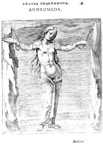

Hug. Grotii Syntagma Arateorum, opus antiquitatis et astronomiae studiosis utilissimum. [...] [Lugduni Batavorum,] ex officina Plantiniana, apud Christophorum Raphelengium, 1600. -- (569 E 8)
Hollands wonderkind Hugo de Groot (1583-1645) publiceerde, zestien jaar oud, alle bekende Aratus-teksten, zowel de Griekse grondtekst als de Latijnse vertalingen van M. Tullius Cicero, Germanicus Caesar en Rufius Festus Avienus. Hij voorzag ze bovendien van doorwrochte commentaren, waarmee hij blijk gaf ook het Arabisch te beheersen. De Leidse geleerde Josephus Justus Scaliger (1540-1609), die zelf een jaar eerder een briljante editie van de Astronomica van de Romeinse dichter M. Manilius (eerste eeuw na Chr.) bezorgd had, had hem hiertoe aangemoedigd.
Aanleiding was het feit dat de schitterende Aratea-codex (hier getoond als nummer 59) hem via de geleerde curator van de Leidse universiteit Janus Dousa (1545-1604) in handen was gespeeld.
Grotius’ uitgave wordt zelfs nu nog geciteerd vanwege de enkele voortreffelijke verbeteringen in de corrupte tekst. Interessant is dat Grotius de betekenis van de illustraties doorzag en ze in zijn uitgave precies zo liet reproduceren als hij ze in het handschrift gevonden had. Alleen de toen al mankerende platen moesten uit een andere bron worden aangevuld, waarvoor hij gebruik maakte van een exemplaar van de editie van Hyginus met houtsneden, uitgegeven in Bazel in 1549, dat nu in de Leidse bibliotheek bewaard wordt onder signatuur 761 B 6.
De opdracht voor de illustraties werd gegeven aan een van de bekendste graveurs van die dagen, Jacob de Gheyn (1565-1629). Zo kon een uitgave ontstaan, een zeevarende natie waardig, waarvoor de studie van de astronomie allerminst een luxe was, zoals De Groot in zijn dedicatie aan de Staten van Holland schreef.
De taak van De Gheyn was niet eenvoudig, omdat hij de gekleurde miniaturen in zwart/wit moest transponeren. Dat dwong hem bij voorbeeld om de blauwe nachtelijke hemel van wolken te voorzien. Vergelijking van het handschrift met de gedrukte plaat laat zien dat De Gheyn er niet geheel in slaagde het klassieke karakter van de afbeeldingen te handhaven, hoewel hij direct naar het handschrift werkte. Vrijwel alle miniaturen zijn meer of minder beschadigd doordat hij de contouren en voornaamste steunende lijnen direct van de miniaturen overtrok.
Literatuur
- G. Thiele, Antike Himmelsbilder. Mit Forschungen zu Hipparchos, Aratos und seinen Fortsetzern und Beiträgen zur Kunstgeschichte des Sternhimmels. Berlin 1898, p. 77.
- A.W. Byvanck, De platen in de Aratea van Hugo de Groot. Amsterdam 1949 ( = Mededelingen der Koninklijke Nederlandse Akademie van Wetenschappen, afd. Letterkunde. N.R. 12, nr. 2).
| vorige pagina | top pagina |